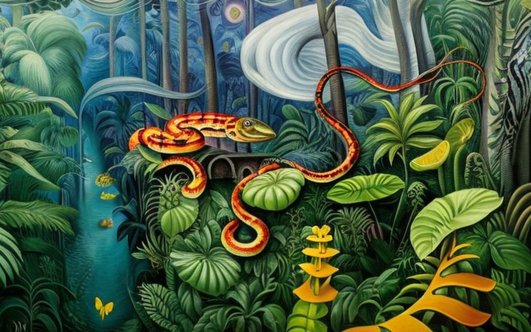
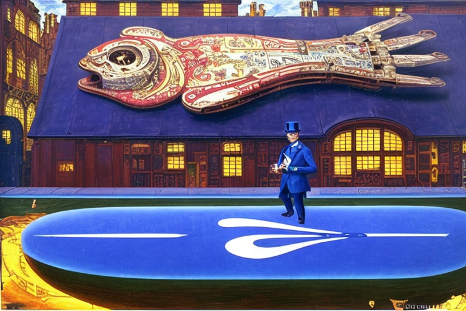
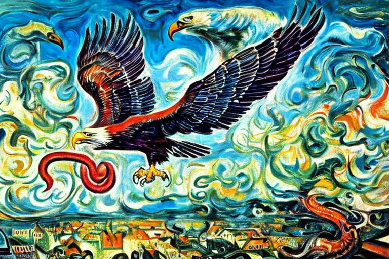

The cobra’s venom and the epidemic
HOME
Table of Contents
Emergence of the jungle serpent

In the dense, sweltering jungle of South Asia, a new species of cobra was emerging. The venomous serpent was unlike any other cobra ever seen before, with a shiny, iridescent black coat that glimmered in the sunlight. Its scales were harder and more durable than any other cobra’s, providing a natural armor that protected it from predators and gave it an intimidating presence.
This new species, which had yet to be named, had evolved over centuries of living in the harsh jungle environment. It had developed powerful muscles in its body and tail, allowing it to strike with incredible speed and force. Its venom was more potent than any other cobra’s, causing excruciating pain and paralysis in its victims.
The cobra’s habitat was the jungle, where it lived in the thick underbrush and trees. It was a skilled hunter, using its keen senses to track prey and its lightning-fast reflexes to strike at just the right moment. Its prey ranged from small rodents to larger animals like monkeys and even other snakes.
One day, the cobra began to venture beyond the jungle and into the nearby city. Its presence was initially unnoticed, as the creature slithered through the shadows of the streets and alleys. But soon, reports began to emerge of a deadly new snake in the area, and panic spread through the city.
Animal control was called in to try and contain the new species, but their efforts were in vain. The cobra was too cunning and too powerful for any human to handle. As the days passed, the number of sightings increased, and the creature began to grow bolder.
Soon, the city was in a state of chaos. People were afraid to leave their homes, and the government declared a state of emergency. It seemed like there was no stopping the new cobra species, which was not just one snake, but an entire colony of genetically mutated cobras that had been evolving in secret in the depths of the jungle.
The researchers worked tirelessly to find a solution to the crisis, but time was running out. The cobra colony had become too powerful and too widespread to contain, and the city was on the brink of destruction.
In the end, it was a team of brave snake handlers who stepped up to face the challenge head-on. Armed with knowledge about the new species they were able to track down the colony and capture them all.
The unstoppable epidemic

Despite the best efforts of the snake handlers and researchers, the damage had already been done. The new cobra species had unleashed a wave of destruction and terror upon the city, and its venom had poisoned anyone who had come into contact with it.
The venom of the new cobra species was particularly potent and deadly. Not only could it cause intense pain and paralysis in its victims, but it could also spread through physical contact. This meant that anyone who had been bitten or touched by the venomous serpents would then become carriers of the poison, passing it on to anyone they came into contact with.
The first signs of the venom’s spread were subtle at first. People who had been bitten or touched by the snakes began to feel a sense of malaise and weakness. They thought it was simply the normal symptoms of snakebite, but they were mistaken.
As the venom began to take hold, people’s skin began to turn a sickly shade of green, and their eyes grew hazy and clouded. Their bodies became weak and unsteady, and they began to experience intense pain and paralysis.
It wasn’t long before the city was in the grip of a full-blown epidemic. People were dying by the hundreds, and there was no way to stop the spread of the venom. Those who had been bitten or touched were rapidly passing the poison on to others, and it seemed like there was no end in sight.
The streets of the city were now littered with the bodies of those who had succumbed to the venom. The air was thick with the stench of death, and the once-thriving metropolis had been reduced to a desolate wasteland.
The snake handlers and researchers worked around the clock to try and find a cure for the venom, but their efforts were in vain. It seemed that the new cobra species had unleashed a weapon that was too powerful for even the most advanced medical science to overcome.
Bob O’Connor: voice of reason

As the city lay in ruins and the venom epidemic raged on, one news host emerged as a beacon of hope and sanity in the chaos. His name was Bob O’Connor, and he was a towering figure of journalistic integrity and gravitas.
As the venom emergency spread, Bob took to the airwaves to warn the citizens of the city of the dangers that were facing them. In a voice that was both commanding and soothing, he urged everyone to stay at home and avoid any unnecessary contact with others.
“Good evening, citizens of the city,” he began. “I come to you tonight with a heavy heart, for we are facing an unprecedented crisis. The venom of the new cobra species is spreading through our city like a wildfire, and we must all do our part to contain it.”
Bob’s message was clear and unambiguous: stay at home, avoid contact with others, and do everything possible to prevent the spread of the venom. He knew that the responsibility of keeping the citizens safe lay not just with the individuals themselves, but with the state as well.
And so, as Bob continued to deliver his message of caution and responsibility, the state swung into action. They implemented strict lockdown measures, closing all public spaces and instituting a curfew that was strictly enforced. Police and military personnel patrolled the streets, ensuring that no one violated the rules and risking the spread of the venom.
The state also established a network of makeshift hospitals and quarantine centers, where those who had been bitten or touched by the venom could receive treatment and care. They worked around the clock to produce an antidote, and to distribute it to those who needed it the most.
But the state’s efforts were not enough on their own. It was the responsibility of every citizen to do their part in preventing the spread of the venom. And so, Bob’s message resonated deeply with the people of the city, and they heeded his call to action.
They stayed at home, as much as possible, venturing out only when necessary to gather food or supplies. They wore masks and gloves to protect themselves and others, and they made sure to wash their hands and sanitize their surroundings regularly.
Protective measures
As the city slowly began to emerge from the shadow of the venom epidemic, Bob O’Connor continued to report on the latest developments in the fight against the deadly new cobra species. And there was one development that he reported on that sent shockwaves through the city: the state’s decision to enforce mandatory gloves in all public spaces and beaches.
“Good evening, citizens of the city,” Bob began, his face solemn and serious. “I have some news that will likely come as a surprise to many of you. The state has decided to enforce mandatory glove usage in all public spaces and beaches, effective immediately.”
Bob went on to explain that this decision was made in response to the discovery that the venom poison diluted in seawater on the beach. It was still dangerous if touched, but the state had determined that wearing gloves would greatly reduce the risk of exposure and prevent the spread of the venom.
The announcement sent shockwaves through the city, with many people questioning the practicality and effectiveness of such a measure. But Bob was quick to reassure the citizens that the state had conducted extensive research and consulted with leading experts before making their decision.
“And while it may seem inconvenient or even uncomfortable to wear gloves at all times, we must remember that this is a small sacrifice to make in order to protect ourselves and those around us,” Bob intoned. “We have already seen the devastating effects that the venom can have on our community, and we cannot afford to take any chances.”
As Bob’s message sunk in, the citizens of the city began to adapt to the new reality. They wore gloves when out in public, whether on the beach or in other public spaces, and they became accustomed to the feel of the latex or rubber on their skin. It wasn’t comfortable, but it was necessary.
Feathers and fangs

Despite the state’s mandate for mandatory glove usage, Bob O’Connor had received reports of a group of citizens who were refusing to comply with the regulations. Instead, they had decided to take matters into their own hands and train eagles to catch and eat the venomous cobras that had spread out of the jungle and into the city.
Bob knew he had to investigate this further, and so he set out to meet with the leaders of this group. As he made his way through the city, he couldn’t help but notice the lack of gloves on many of the citizens he passed. It was clear that not everyone was taking the threat of the venom seriously, and that was a cause for concern.
When Bob finally reached the group’s headquarters, he was greeted by a man named Jack, who was leading the effort to train the eagles. Jack was a tall, rugged-looking man with a thick beard. He explained to Bob that they had decided to take matters into their own hands because they didn’t trust the state to handle the situation effectively.
“We know these cobras better than anyone else,” Jack said, gesturing to a large bird of prey perched on his arm. “And we know that the best way to deal with them is to let our eagles do what they do best.”
Bob watched as the eagle took off from Jack’s arm, soaring high into the sky before diving down and snatching up a cobra in its talons. The cobra writhed and hissed, but the eagle was too quick and too powerful. In a matter of seconds, it had killed the cobra and was feasting on its flesh.
It was a gruesome sight, but Bob couldn’t help but be impressed by the efficiency of the eagle’s hunting tactics. He had always known that eagles were powerful predators, but he had never seen them in action like this before.
Over the next few days, Bob followed the group as they continued to train their eagles and hunt the cobras. He saw firsthand how effective their methods were, and he couldn’t help but wonder if they might have found a solution to the venom problem that had plagued the city.
But as the weeks passed, Bob began to realize that the group’s methods were not without their risks. The eagles were powerful hunters, but they were also unpredictable, and there had been reports of some of them attacking citizens who had gotten too close to their prey.
And while the group’s efforts had certainly helped to keep the cobra population in check, it was clear that they couldn’t eradicate them entirely. There were still cobras lurking in the shadows, and the threat of venom poisoning was still very real.
In the end, Bob realized that there was no easy solution to the venom problem. It was a complex issue that required a multi-faceted approach, one that involved not just the state and its regulations, but also the citizens of the city and their own individual efforts to stay safe.